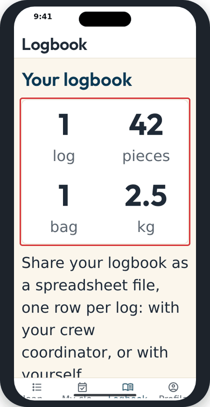

React Native & Expo · Part 3 · Session 19 of 26 · 3 hours
Session 19
Motion Polish and Accessible Apps
Motion that has a job and steps aside when asked. Then the whole app, checked by ear.
Today
Three hours, two lessons
| 0:00 | Warm-up: Session 18 from memory |
| 0:10 | 7.3 Motion Polish: model, demo, lab, project |
| 1:15 | Break (10 min): set up your screen-reader shortcut |
| 1:25 | 8.1 Accessible Mobile Apps: model, demo, lab |
| 2:15 | 8.1 The audit, in pairs, then the share-out |
| 2:50 | Exit ticket, homework, what to bring next time |
LABS Lab files are in
labs/module-19. Work in starter/, never the solution.Warm-up · 10 minutes
From memory: Session 18
- Tally counts every frame on the UI thread. Why is its number a shared value and not React state?
- A gesture callback calls a React setter directly. Why does the web preview not catch it?
- Why does every waiting card have a visible Remove button when the swipe already removes it?
WHY No notes. Write first, then compare with a neighbor.
7.3
Motion Polish
Arriving, leaving, making room, and stepping aside.
7.3 · Frame
Motion with a job
- A removed item leaves: you see WHICH one went
- The others make room: you keep your place
- New items arrive gently; what is already there is not news
- A bouncing list on every open has no job: people learn to dislike it
7.3 · Mental model
Making room on the bench
exiting: standing up and walking off to one sidelayout: the others shuffling along to close the gapentering: someone new sitting downskipEntering: when the crew first sits, nobody makes a show of it
MODEL Nobody vanishes, and nobody teleports.
7.3 · The code
Three props on each waiting card
shoreline-crew/src/app/(tabs)/logbook.tsx
// A card that leaves slides out the way the swipe points; the cards below glide up
<Animated.View
key={log.clientId}
entering={FadeIn}
exiting={FadeOutLeft}
layout={LinearTransition}
WHY Layout on what MOVES, never on a box that only gets shorter.
7.3 · Live demo
Caught mid-move

7.3 · Where it breaks
Two places layout animations misbehave
layouton the section AND its cards: measured 323 px off, then a slide- FlashList rows are recycled, never mounted: the first screenful fades in, then nothing
- The fix for lists: animate inside the row, or
prepareForLayoutAnimationRender() - The Logbook draws a few cards with map: every card really mounts
7.3 · Who reduces what
The motion inventory
- Tally, swipe spring, cards (Reanimated) →
<ReducedMotionConfig> - The log-sent check mark (Lottie) →
useReduceMotion(): a still icon - Screens sliding (native navigation) → the Stack's
animation: 'fade' - Tally's color highlight: kept on purpose (a dissolve in place)
- Spinners, pull to refresh: the phone's own
7.3 · The rule
The app's switch only adds
shoreline-crew/src/state/motion.ts
/** true when motion should step aside: the phone asks for it, or the volunteer did, in the app */ export function useReduceMotion(): boolean { const phone = usePhoneReducesMotion(); const { reduceMotion } = useSettings(); return phone || reduceMotion;
WHY The phone's setting is the person's word for every app. Nothing turns motion back on against it.
7.3 · Telling Reanimated
One component in the root layout
shoreline-crew/src/app/_layout.tsx
{/* Every Reanimated animation left at ReduceMotion.System (the default) follows this, live */}
<ReducedMotionConfig mode={reduceMotion ? ReduceMotion.Always : ReduceMotion.Never} />
WHY Live, from the next animation on. No restart, unlike Lesson 7.1.
7.3 · Lottie
A mark that steps aside itself
shoreline-crew/src/components/LogSentMark.tsx
return ( // The size goes on this View: the web preview's player ignores style and fills its parent. // aria-hidden hides it from screen readers on iPhone, Android and the web preview alike. <View style={styles.mark} aria-hidden> {reduceMotion ? ( <Icon name="sent" size={size} color={colors.action} /> ) : ( <LottieView source={logSent} autoPlay loop={false} style={styles.mark} /> )} </View>
WHY Lottie's player never hears Reanimated. aria-hidden: decoration, on all three platforms.
7.3 · Predict
Only lottie-react-native installed
- Does the app work on a phone?
- Do
npx tsc --noEmitandnpx expo lintcomplain? - What does
npx expo export --platform websay?
7.3 · Live demo
The web player left out
npx expo export --platform web
Error: Unable to resolve module @lottiefiles/dotlottie-react from ~/shoreline/shoreline-crew/node_modules/lottie-react-native/lib/module/LottieView/index.web.js: @lottiefiles/dotlottie-react could not be found … ... Import stack: ... src/components/LogSentMark.tsx | import "lottie-react-native" src/app/log/[id].tsx | import "@/components/LogSentMark"
WHY Bottom up: your screen → LogSentMark → lottie-react-native → its web file.
7.3 · Reduce Motion, live
The switch that only adds

7.3 · Guided lab · 20 minutes
Motion polish on new material
labs/module-19/l7_3-motion-polish/starter- Task 1: a Calm photos switch that only ADDS
- Task 2: a saved mark that plays once, has a still twin, and is hidden
- Task 3: tags that make room (stretch in the room)
- Done: 9 passed; tsc and lint silent
NOTE Tests check what the code ASKS for. npm run web shows it move.
7.3 · Project · 15 minutes
Polish the Logbook: Steps 1 and 2
npx expo install lottie-react-native @lottiefiles/dotlottie-reactassets/animations/log-sent.json: find the 45 frames and "Draw"reduceMotionin settings.ts, thensrc/state/motion.ts- ReducedMotionConfig and the Stack's animation in the root layout
HOME Steps 3 to 7 go home. Done in the room: tsc prints nothing.
Break
10 minutes
Set up your screen-reader shortcut now: iPhone triple-click, Android both volume keys.
8.1
Accessible Mobile Apps
An audit, not a feature.
8.1 · Mental model
The radio call
- Label: what is it called?
- Role: what kind of thing is it?
- State: what is it like right now?
- Value: how much? · Hint (sometimes): what will happen?
- Decoration is radio silence:
aria-hidden
MODEL Short, never repeats itself, never makes the listener guess.
8.1 · Elements
One stop or many
- A Text is an element; a Pressable is one element with its text as its label
accessibleon a View: one element, read as one sentencearia-hidden: never read, never focused- Never group controls into an accessible view
8.1 · Two kinds of tools
What each can and cannot tell you
- Web preview + DevTools
- Lighthouse (axe-core), Accessibility pane
- Missing names, roles, mismatches, sizes
- A translation of your app, not a phone
- Your phone
- VoiceOver or TalkBack, the largest text
- Reading order, what is said, announcements
- Nothing systematic by itself
RULE A clean web audit is not an accessible app.
8.1 · Live demo
A screen reader, mirrored
- Cleanups: swipe through the first card, count the swipes
- Profile: how many stops for each switch?
- Logbook with a waiting log: what does the tab say?
- iPhone: Send now. Do you hear anything?
WAY OUT Turn it off with the shortcut before you go back to coding.
8.1 · One row, one target, one stop
The switch row, after
shoreline-crew/src/components/SwitchRow.tsx
<Pressable
onPress={() => onValueChange(!value)}
accessible={false} // not a stop of its own for screen readers: the switch is
tabIndex={-1} // nor for a keyboard (Android, the web preview): Tab goes to the switch
style={styles.row}
>
{/* Seen, not read: the switch's accessibilityLabel says the same words */}
<AppText style={styles.label} aria-hidden>
{label}
</AppText>
<Switch
value={value}
onValueChange={onValueChange}
accessibilityLabel={label} // a screen reader says the words with the switch
WHY The row presses; the switch speaks; the words are seen, not read.
8.1 · The result
One row, one target

8.1 · Label in Name
A tab whose name matches its words
shoreline-crew/src/app/(tabs)/_layout.tsx
tabBarLabel: unsent > 0 ? `Logbook (${unsent})` : 'Logbook', tabBarAccessibilityLabel: unsent > 0 ? `Logbook (${unsent}), not sent yet` : undefined,
WHY Voice control users say what they see: "Tap Logbook".
8.1 · Predict, then check
aria-hidden="true", the web way
npx tsc --noEmit
src/components/Icon.tsx:35:6 - error TS2322: Type '{ name: …; size: …; tintColor: …; "aria-hi...' is not assignable to type 'ViewProps'.
Types of property '"aria-hidden"' are incompatible.
Type 'string' is not assignable to type 'boolean | undefined'.
35 <SymbolView
~~~~~~~~~~
Found 1 error in src/components/Icon.tsx:35
WHY A boolean in React Native. Write aria-hidden on its own.
8.1 · Announcements
iPhone has no live regions
shoreline-crew/src/components/AppText.tsx
useEffect(() => {
// iPhone has no live regions (accessibilityLiveRegion is for Android and the web): VoiceOver
// says the new words because we ask it to, queued behind whatever it is saying already
if (Platform.OS === 'ios' && words !== '') {
AccessibilityInfo.announceForAccessibilityWithOptions(words, { queue: true });
}
}, [words]);
WHY One change in AppText covers all 21 live texts. queue: true lets VoiceOver finish first.
8.1 · Text size
Let text grow
- Layouts that grow: minHeight, flex: 1, flexWrap
- A different layout at large sizes:
fontScale >= 1.5 maxFontSizeMultiplieronly on text that is already bigallowFontScaling={false}: never
8.1 · Large text, emulated
Tallies two to a row

8.1 · Guided lab · 20 minutes
Three findings, fixed
labs/module-19/l8_1-accessible-mobile-apps/starter- Task 1: a packing row: one target, one stop, a checkbox called by its words
- Task 2: a status line VoiceOver hears, queued
- Task 3: tide tiles that grow and stack (stretch in the room)
- Done: 6 passed; tsc and lint silent
NOTE Testing Library skips what screen readers skip.
8.1 · Project · 25 minutes, in pairs
Audit Shoreline Crew: Steps 1 and 2
- Web: Lighthouse on four screens; the Accessibility pane on a switch row and the Logbook tab
- Phone: a screen reader, swipes and double-taps only
- One drives, one writes the findings table; then swap
- Every finding written down, including the ones you will not fix
RULE No phone? Pair with someone who has one. Never fake Step 2 in a browser.
8.1 · Share-out · 10 minutes
One finding no tool could make
- Each pair: one finding from the screen reader
- How bad is it, and which step fixes it?
- Steps 3 to 8 go home: the fixes, then the same checks again
Wrap-up · 4 minutes
Exit ticket
- The phone asks for less motion, the app's switch is off: does the tally count?
- One motion ReducedMotionConfig cannot reach, and what the app does instead
- Lighthouse is clean: two things only a phone can still tell you
WHY No notes. Workbook Exit Ticket box or a sticky note on the way out.
Before Session 20
Homework and bring list
- Finish both projects (Step 7 and Step 8 on your phone); exercises; both quizzes; both journals
- Labs: Task 3 and the stretch of each
- Keep the findings table: Lessons 8.2 and 8.3 lock fixes in with tests
- Bring: shoreline-crew at lesson-28-end, committed
NEXT Session 20: Testing the App's Logic.